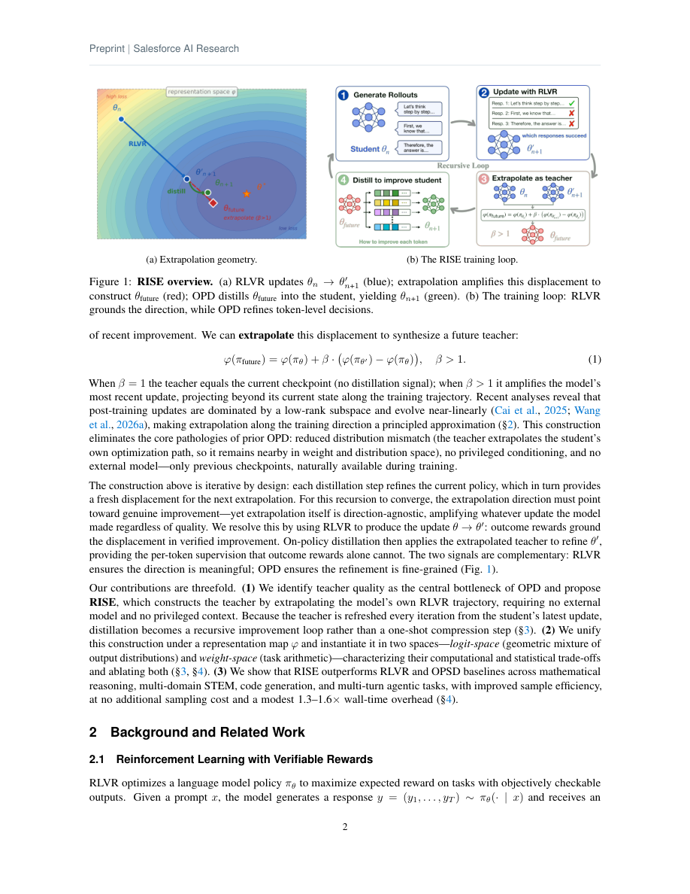

#1
★ 8/10
RISE: Recursive Improvement via Self-Extrapolating Policy Distillation
RISE: Recursive Improvement via Self-Extrapolating Policy Distillation

图 Figure · Page 2 of paper
🎯 （AI 中文深度分析暂不可用：Anthropic API 额度不足。英文栏为论文原文摘要，下方链接均可正常访问。）
On-policy distillation (OPD) provides dense, per-token supervision for language model post-training, but its effectiveness is bottlenecked by teacher quality: external teachers suffer from distribution mismatch, while self-distillation w…
| 维度 | 中文 | English |
|---|---|---|
| ❓ 待解决 的问题 |
（AI 中文深度分析暂不可用：Anthropic API 额度不足。英文栏为论文原文摘要，下方链接均可正常访问。） | On-policy distillation (OPD) provides dense, per-token supervision for language model post-training, but its effectiveness is bottlenecked by teacher quality: external teachers suffer from distribution mismatch, while self-distillation with privileged conditioning is limited by in-context learning capacity. We propose \textbf{RISE} (\textbf{R}ecursive \textbf{I}mprovement via \textbf{S}elf-\textbf{E}xtrapolating Policy Distillation), which constructs a synthetic teacher directly from the model's own RLVR training trajectory. By extrapolating the displacement between the current checkpoint and a trailing anchor---in parameter space or output logit space---RISE converts a sparse outcome-induced parameter update into a dense token-level target, without any external model or privileged conditioning. RISE combines RLVR and OPD in a complementary loop: outcome rewards ground the extrapolation toward correct reasoning, while the extrapolated teacher refines token-level decisions. Moreover, since the teacher is refreshed every iteration as the student improves, distillation becomes a recursive improvement mechanism rather than a one-shot compression step. Experiments spanning mathematical reasoning, multi-domain STEM, code generation, and multi-turn agentic tasks show that RISE outperforms RLVR-only training and on-policy self-distillation across all settings. |
| 💡 解决 的亮点 |
（AI 中文深度分析暂不可用：Anthropic API 额度不足。英文栏为论文原文摘要，下方链接均可正常访问。） | See the paper’s original abstract in the "Problem / 背景" row above. |
| 🧪 实验 内容 |
（AI 中文深度分析暂不可用：Anthropic API 额度不足。英文栏为论文原文摘要，下方链接均可正常访问。） | See the paper’s original abstract in the "Problem / 背景" row above. |
| 📊 实验 结果 |
（AI 中文深度分析暂不可用：Anthropic API 额度不足。英文栏为论文原文摘要，下方链接均可正常访问。） | See the paper’s original abstract in the "Problem / 背景" row above. |
| 🏁 结论 | （AI 中文深度分析暂不可用：Anthropic API 额度不足。英文栏为论文原文摘要，下方链接均可正常访问。） | See the paper’s original abstract in the "Problem / 背景" row above. |
| 🔗 论文 链接 |
arXiv: 2609.05295v1 · 📥 PDF | |
⚙️ Method · 方法详解
（AI 中文深度分析暂不可用：Anthropic API 额度不足。英文栏为论文原文摘要，下方链接均可正常访问。）
See the paper’s original abstract in the "Problem / 背景" row above.
🌟 Why It Matters · 为什么重要
（AI 中文深度分析暂不可用：Anthropic API 额度不足。英文栏为论文原文摘要，下方链接均可正常访问。）
See the paper’s original abstract in the "Problem / 背景" row above.